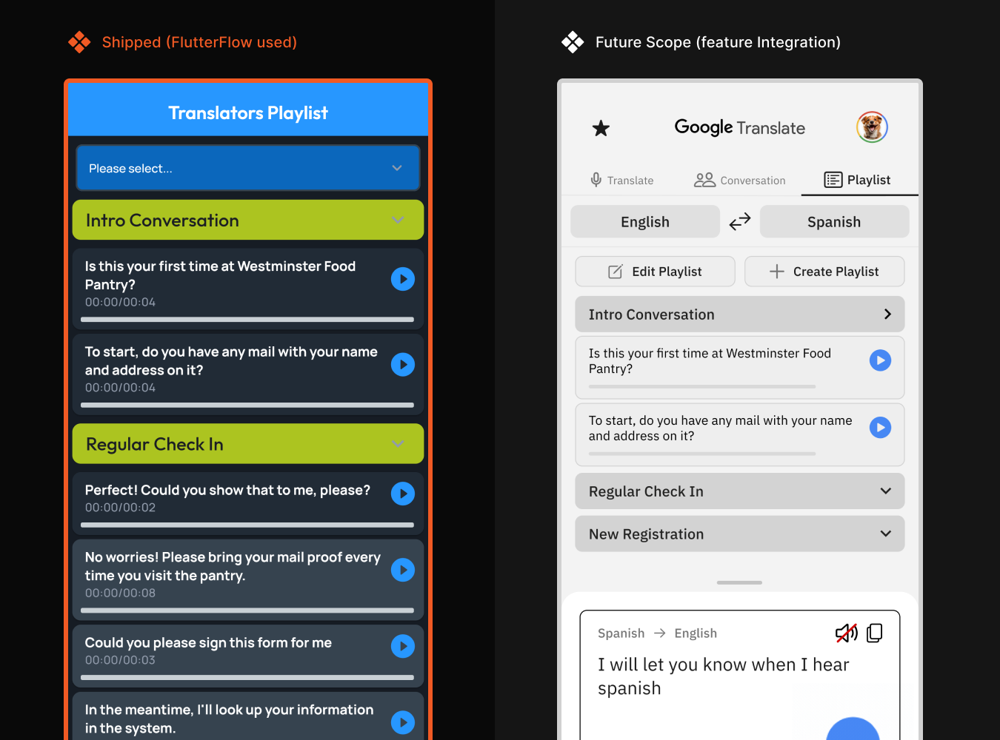
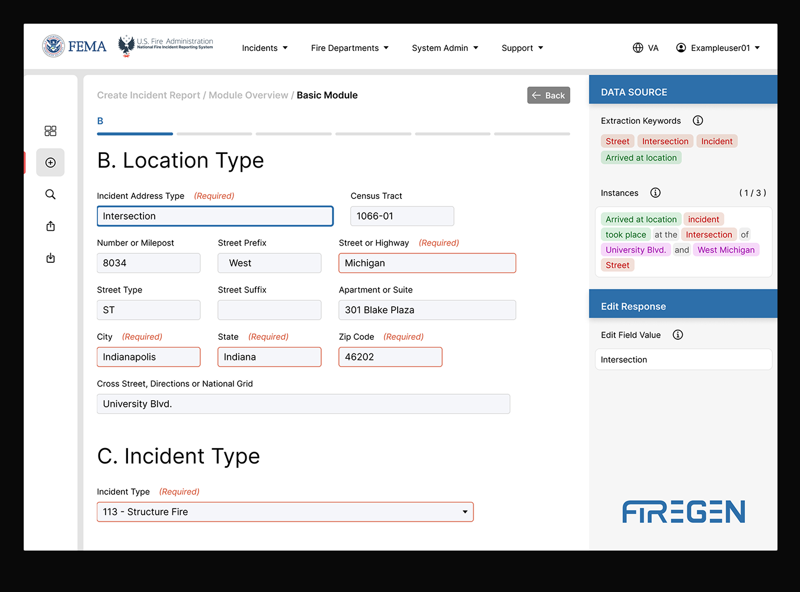
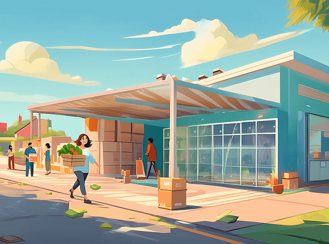
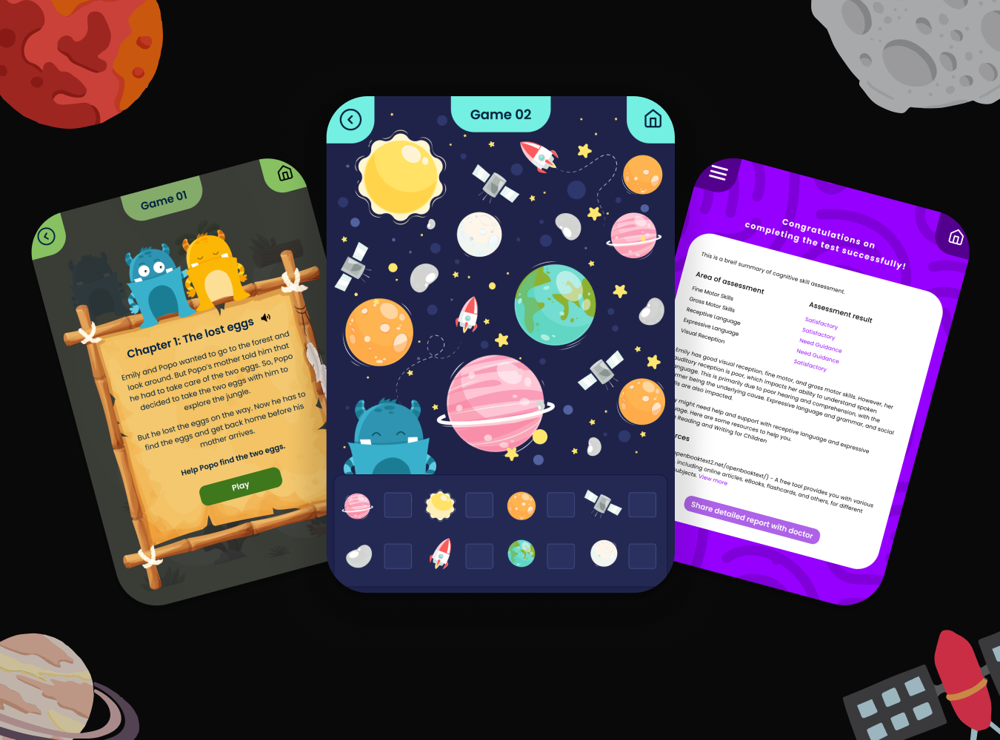

Boston Bioprocess · Yanta
Designed an AI assistant that turns scientists' plain-language questions into charts and SQL they can check before saving.
V0 testing – 87.5/100 on UX-Lite
Boston Bioprocess · Yanta
Turned messy instrument exports into one-step uploads: AI reads the file, the scientist checks the graph before saving.
V1 testing – 91.7/100 on UX-Lite
Boston Bioprocess · Yanta
Gave a lab product its name and mark, its public face, and the design system that carries both into code, in one year.
Shipped in three weeks: 280+ component variants
Boston Bioprocess · Yanta
Replaced scattered planning spreadsheets with one scheduler where the plan becomes the batch record, traceable to audit.
V1 testing – 93.8/100 on UX-Lite
Featurely AI
Streamlined user experience, onboarding, and AI-powered testing for a stealth-mode research platform.
Slashed time-to-value from 5.12 min to 2.28 min, by 52.7%
Toyota Mobility Foundation
Improved food pantry operations through innovative strategies to overcome language barriers
Improved Overall Check-In Process Efficiency by 26%

Redlab.ai
Optimizing incident report generation system for firefighters using generative AI and NLP
Accelerated Firefighters Incident Report Generation by 50%

Toyota Mobility Foundation
Elevated client experience and food pantry operations through service redesign
Increased Customer Satisfaction Rate (CSAT) by 21%

Indiana University
Ensuring essential cognitive development in children during the early childhood phase
Achieved 92% CSAT for app intuitiveness and developmental monitoring utility



Copyright © 2025 Anamitra Jana